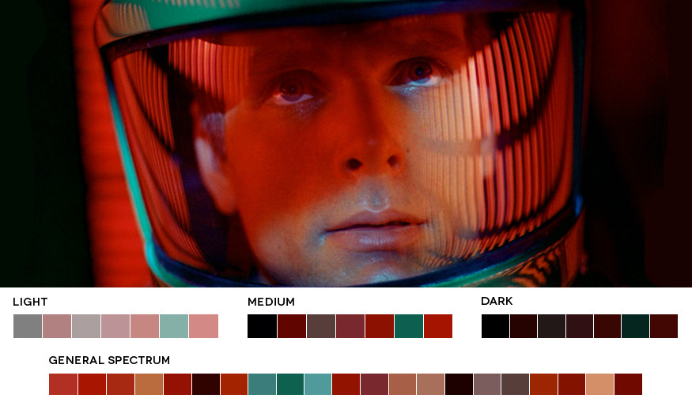

<ion-header>
  <ion-toolbar>
      <a ion-title routerLink="/home" class="mainTitle" slot="start">
        <ion-title>tristangray.space<span class="home">/home</span></ion-title>
    </a>  
    <!--<ion-title>Code</ion-title>-->
    <ion-buttons slot="end">
      <ion-menu-button class="menu"></ion-menu-button>
    </ion-buttons>  
  </ion-toolbar>
</ion-header>

<ion-content padding>
<!-- <div class="backdrop">code</div>-->
<ion-grid>
<ion-row justify-content-around>
    <ion-list no-lines *ngFor="let p of codeProjects; let i = index">
        <ion-col col-6 col-md-4 col-xl-3> 
        <!--<ion-card class="spacecard">
            <iframe *ngIf="c.vimeoID" class="vimeoframe" [src]="getURL([c.vimeoID])" frameborder="0" webkitallowfullscreen mozallowfullscreen allowfullscreen>
            </iframe> 
            
            <ion-card-content (click)="navTo(i)">
            <ion-card-subtitle class="shortText">{{c.shortText}}</ion-card-subtitle> 
            <ion-card-title class="title">{{c.name}}</ion-card-title>
            <p class="longText" [id]="c.index" text-wrap>{{c.longText}}</p> 
            </ion-card-content>
        </ion-card> -->
            
        <ion-card class="spacecard" (click)="navTo(i)">
            
            
            <div class="card-title">{{p.name}}</div>
            <div class="card-subtitle">{{p.shortText}}</div>    
        </ion-card>     
        </ion-col>
    </ion-list> 
</ion-row>
</ion-grid>
    
    
    <div class="floaters">
        
        <ion-button route-direction="root" routerLink="/home">
            <ion-icon name="rocket"></ion-icon>
            Home
        </ion-button> 

        <ion-button route-direction="forward" routerLink="/video">
            <ion-icon name="film"></ion-icon>
            Video
        </ion-button> 
        
    </div>   
    
</ion-content>
